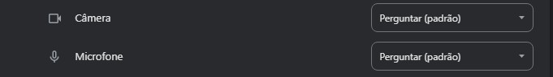
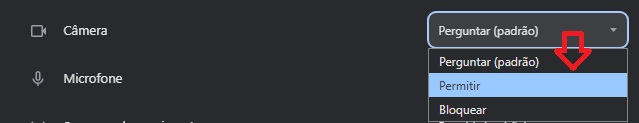

Habilitando a Câmera e o Microfone
1. No canto superior esquerdo, logo ao lado da URL, possui um ícone que é responsável por apresentar as
informações do site. Clique e em seguida selecione: “Configurações de sites” ou "Permissões para este site".
2. Após isso, procure o ícone da câmera e do microfone entre as Permissões.
3. Na caixa de seleção, conforme imagem abaixo, basta selecionar a opção “permitir” em ambos.
4. Agora tente usar o áudio e a câmera novamente.